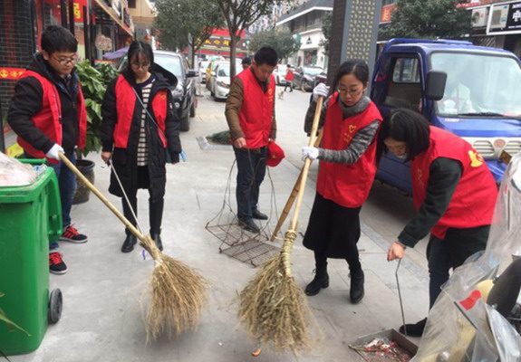

景宁团县委开展组织2017“新春全民清洁”志愿者活动
桂电志愿者网 日期：2017-02-07 来源：湖南省交通运输厅

在春节假期结束,上班的第一天由景宁团县委开展组织,各单位团委组织、学校团委及社会青年社会组织,共计522名青年志愿者扎实开展了“新春全民清洁”志愿服务活动。本次的志愿者服务内容有卫生整治、停车整治、经营秩序整治、礼让斑马线等志愿服务。
活动中,青年志愿者身着“三城联创”志愿服务红马甲、红帽子、红袖套,在示范路段开展交通礼让斑马线文明劝导、非机动车引导摆放整齐以及商铺经营秩序引导等志愿服务。同时团县委青年志愿者也带着扫把、钳子等打扫工具,到自己所负责的市场网格清扫、搬运垃圾对一些商铺进行经营秩序整治。各单位团委青年志愿者也在自己负责网格地段进行卫生整治及经营秩序整治。随着一上午的活动的推进,行人、非机动车车主、店家们对我们的文明劝导接受度越来越高,自觉度也越来越大,还称呼我们志愿者为“流动的红色交管队”。
此次活动是青年志愿者为响应团县委号召所组织的志愿服务活动,主要在各网格、府前路、人民中路、复兴西路、鹤溪中路等各示范路段进行志愿者服务工作。目的是要充分发挥青年志愿者的带头与表率作用,在新年的开春之际,以年轻人的实际文明行动感染市民,营造出“人人讲文明、人人守文明”的浓厚氛围,为深入推进景宁县“三城联创”工作贡献青春力量。在2017农历新年的第一个工作日打响第一炮。
【责任编辑：成都志愿者】